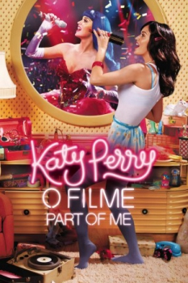

Katy Perry o Filme: Part of Me (2012)


Be yourself and you can be anything

Avaliação (TMDb):


6.8/10 (201 votos)
Avaliação (Usuário):
Outro Título:Katy Perry: Part of Me
País:United States, 93 minutos
Idiomas falados:Inglês, Português
Gênero(s):Documentário, Música
Diretor(s):Dan Cutforth, Jane Lipsitz
Codec:MPEG-2 (DVD)
Número: 1939
Sinopse:
O filme mistura vídeos pessoais da cantora e apresentações.
Elenco:
Katy Perry, Russell Brand, Shannon Woodward, Rachael Markarian, Mia Moretti, Glen Ballard, Adam Marcello, Casey Hooper, Patrick Matera, Max Hart
Tipo de mídia: DVD5,
Legendas: Espanhol, Português
Alugado: Não
Tela: 1.85:1